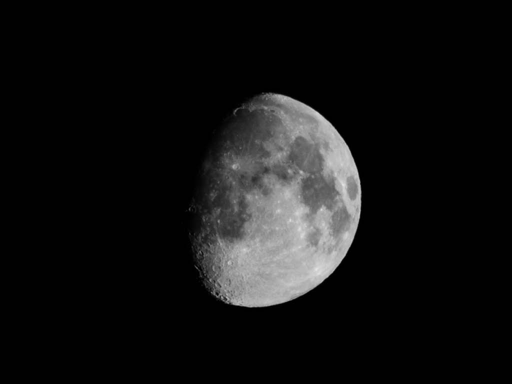
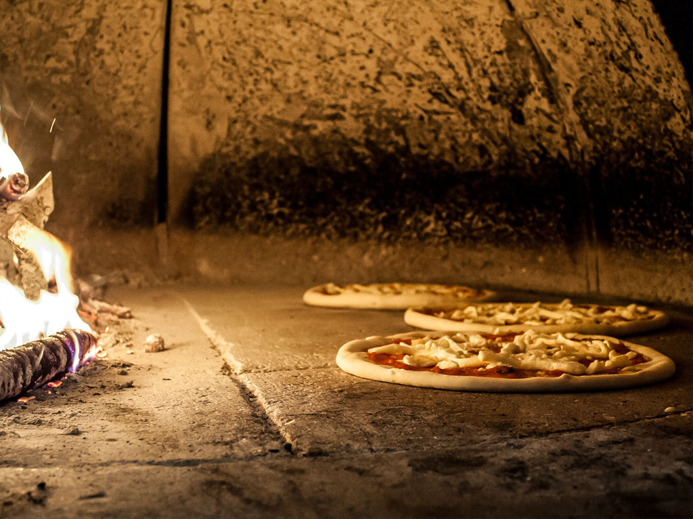

Other images of this beautiful place
Here, we show more images of the town. We invite you to visit us whenever you want, and you will enjoy welcoming and friendly people. We look forward to seeing you!.




Here, we show more images of the town. We invite you to visit us whenever you want, and you will enjoy welcoming and friendly people. We look forward to seeing you!.